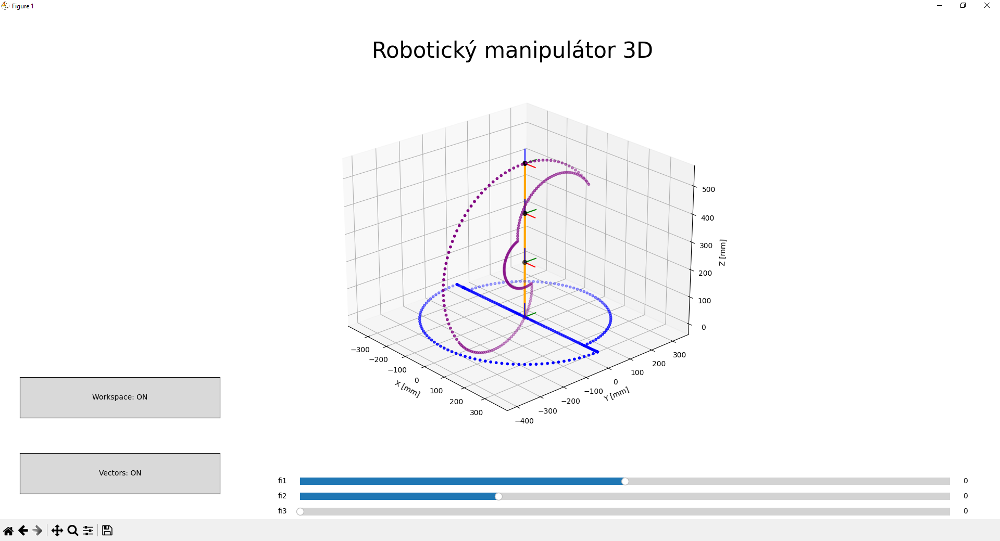

//--Robotics--\\
ROBOTIC OPERATING SYSTEM (ROS)
Working within Linux with ROS 1 and RViz to calculate and realize a planned trajectory for a robotic arm for industrial purposesROBOTIC ARM SIMULATION
Python application visualizing robot arm movements in 3D space in real-time using rotation and translation matrices with matplot and numpy libraries as a part of studies for robotics course at Slovak Technical University in Bratislava
Availible for download on github
